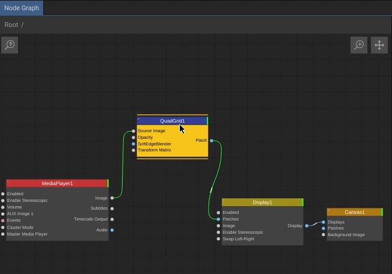
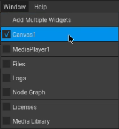
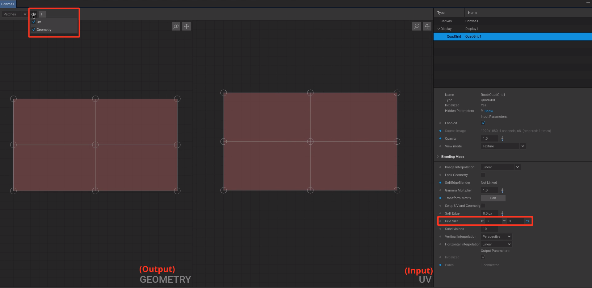
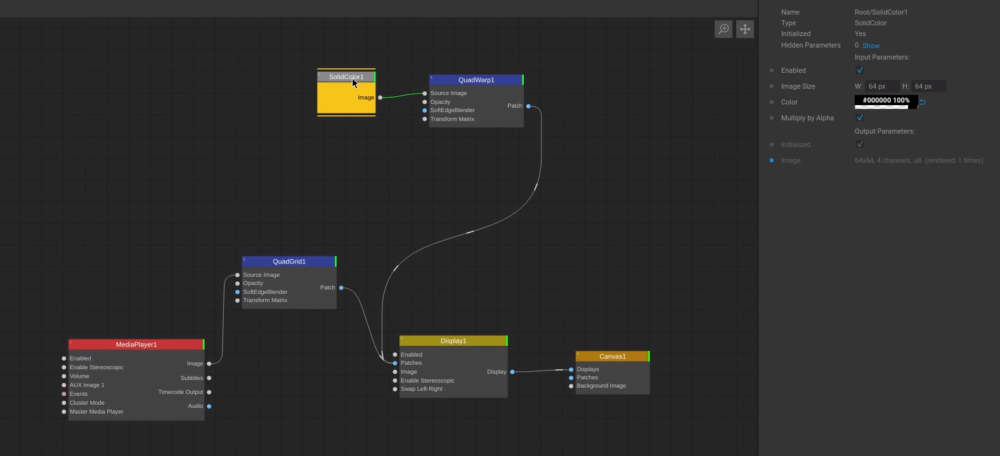

Basic Mapping¶
Quad Mapping¶
For a basic mapping function, add a QuadGrid node between the MediaPlayer and the Display node:
Under Window make sure to only enable the Canvas to have enough space on the screen:
In the Canvas window enable UV and Geometry and in the settings panel define the grid resolution:
Note
Since you only see red squares and you want to see the current playing content, hit F5 on your keyboard to make a preview snapshot to see what you are doing.
Masking¶
To mask areas off, use a SolidColor node, turn its color to black connect it to a QuadWarp and plug it into your Canvas node,
like this:
